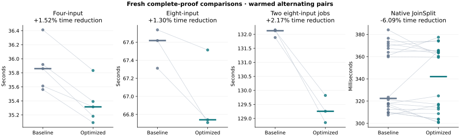
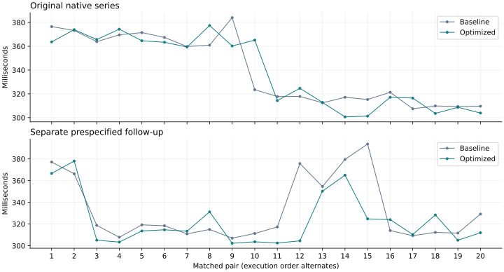

20 October 2026 · Third optimization pass · Tesla V100-PCIE-32GB
This run starts from the previously validated shared-twiddle NTT build. The new changes keep the LDE sponge state at fixed indices and reduce the eight-word Poseidon2 internal sum once. The isolated row-hashing screen improved by 6.15–6.91% across six shapes; complete-proof results are below.
Machine-readable measurements · Previous campaign · Frozen source and controller archive
Seconds; medians from prespecified alternating pairs. A positive reduction means faster. Four-input and native timers cover the proving call and GPU drain, excluding initialization and artifact output. The eight-input timers cover process launch through worker exit, including initialization, the start barrier, artifact output and shutdown; the concurrent timer ends when both workers exit. Independent CPU audits are outside every timer. Every proof uses fresh randomness.
| Workload | Baseline | Optimized | Time reduction | Paired wins |
|---|---|---|---|---|
| Four-input aggregation | 35.859733 | 35.315009 | +1.52% | 5/5 |
| Eight-input aggregation | 67.618271 | 66.740613 | +1.30% | 3/3 |
| Two concurrent eight-input jobs | 132.127000 | 129.255557 | +2.17% | 3/3 |
| Native JoinSplit | 0.322419 | 0.342041 | -6.09% | 12/20 |
The candidate won all 11 aggregation pairs, reducing median proving time by 1.52% for four inputs, 1.30% for eight inputs, and 2.17% for two concurrent eight-input jobs. Native latency is variable: the original pooled median was 6.09% slower despite 12/20 paired wins, while the separate follow-up median was 1.37% faster with 14/20 wins. Both native series are retained; no stable native latency improvement is claimed.

In the original native series, both binaries changed from roughly 370 ms to 310 ms midway through sampling. The transition split one pair, leaving different numbers of fast samples in the two arms. This made the ratio of pooled medians disagree with the median matched-pair change. All original samples are retained. A separate twenty-pair follow-up was specified before it ran, using the same frozen binaries and settings; no further series was selected based on its outcome.
| Native series | Baseline ms | Optimized ms | Pooled median reduction | Median paired reduction | Paired wins |
|---|---|---|---|---|---|
| Original series | 322.419 | 342.041 | -6.09% | +0.65% | 12/20 |
| Separate follow-up | 317.906 | 313.551 | +1.37% | +1.65% | 14/20 |

The previous absorb loop indexed s[at++]. The new loop finishes a pending block, absorbs complete four-word blocks, and retains a partial suffix using constant state indices. The compiler-reported private allocation falls from 64 bytes to zero in the measured kernel. The helper for the internal round accumulates low and high 32-bit limbs separately, reconstructs the exact 128-bit sum with one carry, and reduces once. Each accumulator is below 235, including arbitrary noncanonical u64 inputs.
src/gpu.rssrc/gpu/arithmetic_tests.rssrc/block_v2/gpu_hash/engine/lde_execute.rsThe proof format, field, round constants, sponge semantics, verifier, NTT schedule, resource admission and power limit are unchanged. The implementation uses portable OpenCL arithmetic; performance evidence is specific to this V100.
GPU event sums in seconds. These captures are separate from qualification timings; event totals and host spans can overlap. Fresh random sampling can also change refill counts between proofs, so total event counts need not match.
| Workload | Kernel | Baseline | Optimized | Reduction |
|---|---|---|---|---|
| Four-input aggregation | lde_absorb | 7.824812 | 7.391339 | +5.54% |
| Four-input aggregation | lde_ntt | 6.285715 | 6.282204 | +0.06% |
| Four-input aggregation | device_extension_quotient | 3.014943 | 3.015425 | -0.02% |
| Native JoinSplit | lde_absorb | 0.024809 | 0.020801 | +16.15% |
| Native JoinSplit | lde_ntt | 0.012849 | 0.012951 | -0.79% |
| Native JoinSplit | device_extension_quotient | 0.001580 | 0.001585 | -0.32% |
37 targeted tests passed, together with CPU-only and GPU-without-tuning compile checks. The full benchmark ledger contains 126 independently CPU-audited root or native proofs, representing 302 fresh benchmark proofs. Output hashes are unique. Recursive proofs satisfy all 16 required GPU stages; native proofs satisfy 15 and reject a modified public statement. Warm profiles contain no dropped events or missing submission metadata.
The sum oracle includes boundary mixtures and 65,536 random eight-word inputs. The absorb oracle compares all eight state words with the CPU permutation for every rate offset, widths 0–9 and several larger widths, four row counts, band offsets, and padded launches. Source hashes match the release and test builds.
| Targeted check | Passed |
|---|---|
| scalar-absorb-oracle | 1 |
| parameter-guard | 1 |
| tuning-policy | 3 |
| witness-host | 6 |
| witness-budget | 1 |
| ntt-local-memory | 5 |
| ntt-and-tuning-gpu-oracles | 4 |
| arithmetic-oracles | 3 |
| dft-and-commitment-oracles | 6 |
| witness-parity-reference | 2 |
| witness-parity-fusion | 2 |
| witness-rejection | 2 |
| native-wallet-entrypoints | 1 |
Raw logs, telemetry, profiles, all component experiments, frozen baselines, source hashes and CPU audit results remain in benchmark-results/gpu-extensive-20261020-pass3. This report records measured results, not production qualification.